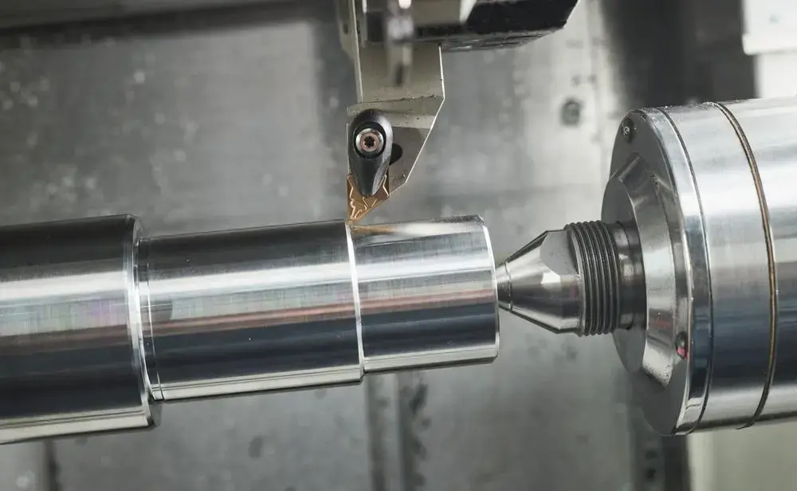
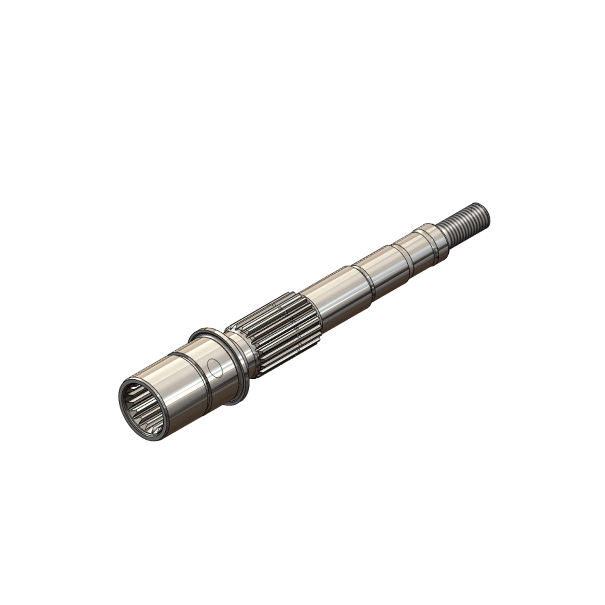

Turning is the process of making round parts on a lathe. Instead of spinning the cutting tool like a mill does, a lathe spins the part itself while a stationary tool is fed into it. This makes turning the fastest and most accurate way to make anything that is round, like shafts, pins, bushings, rings, and threaded fittings. A modern aircraft has thousands of turned parts inside its engines, landing gear, and hydraulic systems.How turning works
The raw material, usually a round bar, is held in a chuck that is mounted to the lathe’s spindle. As the spindle spins, the cutting tool is moved along two main axes. The Z axis runs along the length of the part, and the X axis controls the diameter. Moving in Z cuts along the part, and moving in X cuts in toward the center.
Most CNC lathes use diameter programming, which means an X value in the program is the diameter of the part and not the distance from the center. This makes programming easier because the numbers match the dimensions on the drawing. Lathes also use a feature called constant surface speed, where the machine speeds up the spindle as the tool moves toward the center so the cutting edge is always moving through the material at the same speed.
Turning operations
- Facing: Cutting across the end of the part to make it flat and set its length
- OD turning: Reducing the outside diameter of the part
- Boring: Enlarging and finishing a hole on the inside diameter of the part
- Grooving: Cutting a narrow channel, often for an O-ring or a retaining clip
- Threading: Cutting screw threads by moving the tool at a feed rate synced exactly to the spindle
- Parting: Cutting the finished part off of the bar stock
A simple lathe program
Here is a short example of G-code for a lathe. It faces the end of a 52 mm bar and then turns a 48 mm diameter that is 60 mm long. The notes in parentheses are comments that the machine ignores.
O1001 (FACE AND TURN SHAFT) G21 G18 G40 G99 (METRIC, XZ PLANE, FEED PER REV) T0101 (OD ROUGHING TOOL) G50 S2500 (MAX SPINDLE SPEED 2500 RPM) G96 S180 M03 (CONSTANT SURFACE SPEED, SPINDLE ON) G00 X54.0 Z2.0 M08 (RAPID TO START, COOLANT ON) G01 Z0 F0.2 X-1.6 (FACE THE END) G00 Z2.0 X48.0 G01 Z-60.0 F0.25 (TURN 48MM DIAMETER) X54.0 G00 X150.0 Z150.0 M09 (MOVE AWAY, COOLANT OFF) M30 (END OF PROGRAM)
G00 is a rapid move used when the tool isn’t cutting, and G01 is a straight cutting move at the feed rate set by F. M03 turns the spindle on, M08 turns the coolant on, and M30 ends the program. In a real shop this code would almost always be generated by CAM software, but machinists still need to be able to read it to catch mistakes.
Types of CNC lathes
2-axis lathes
The most basic CNC lathe only has the X and Z axes and a turret that holds 8 to 12 tools. It is great for simple round parts.
Mill-turn machines
A mill-turn lathe adds live tooling, which are small spinning tools mounted in the turret. Along with a Y axis and a second spindle, it can mill flats, drill cross holes, and machine both ends of a part without anyone touching it. This means one machine can finish a complex part that would normally need a lathe and a mill.
Swiss-type lathes
Swiss-type lathes were originally made for the Swiss watch industry. The bar slides through a guide bushing so the tool is always cutting right next to where the material is supported. This makes them perfect for small, long, and skinny parts like aerospace pins, fasteners, and connector contacts.
Vertical turning lathes
For very large and heavy round parts, the chuck is laid flat facing up. Vertical turning lathes (VTLs) are used for jet engine cases and disks that can be several feet across.
Turning in aerospace

Inside a jet engine, the main shafts that connect the turbines to the compressors are turned parts, and so are the turbine and compressor disks that hold the blades. These parts spin at very high speeds, so they have to be perfectly balanced and round. Landing gear pistons, axles, and actuator rods are also turned from high-strength steel and titanium before being ground and plated.On a smaller scale, aircraft use thousands of turned hydraulic fittings and fasteners. These parts are usually made in large quantities on Swiss-type and mill-turn machines. Even though they are small, a single bad fitting could cause a hydraulic leak, so every batch has to be inspected and traced just like the bigger parts.